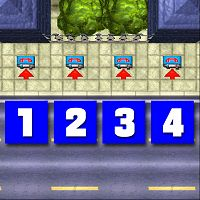
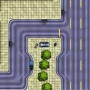
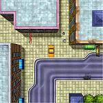
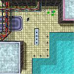
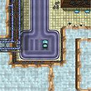
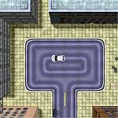
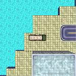
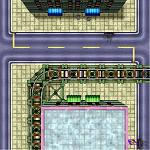

Liberty City 1 (Gangsta Bang)
Sonetti
このチャプターは SW Park からスタートします。指示を受けるため、SW City の公衆電話に向かってください。
| ボス | Bubby |
|---|---|
| 目標スコア | 100万 |
| ミッション | 11 |
公衆電話ミッション
この4つの公衆電話はそれぞれミッション1〜4につながっています。攻略はどのミッションからでも結構です。
| S Park |
 |
Mission 1
- 任務
- 銀行強盗をする Jimmy の手助けをする
- フロー
-
 → NE Park
→ W Park
→ (26秒)
→ SW Park
→ SE Island City
→ NE Park(
→ NE Park
→ W Park
→ (26秒)
→ SW Park
→ SE Island City
→ NE Park( )
→ S Island Heights
)
→ S Island Heights
Jimmy が NE Park に乗り捨てたという車の回収に向かいます。車を発見したら、W Park のガレージまで運転してください。
今度は、Jimmy を迎えに行くことになります。まず、SW Park の駅の公衆電話に呼び出されます。ここは、時間制限がありますが、問題はないでしょう。
電話に出ると、SE Island City にあるタクシーを取りに行かされます。このタクシーには偽のナンバープレートがついています。
そのタクシーを運転して、NE Park の銀行に向かいます。防犯ベルが鳴り響く銀行の玄関先に、Jimmy が待っているので彼を乗せてください。
S Island Heights にある Bubby の愛の巣まで逃げ込むとミッション完了。
| スコア | チェックポイント |
|---|---|
| +5,000 | Jimmy が乗り捨てた Mundano に乗車 |
| +20,000 | Mundano を W Park ガレージに収める |
| +5,000 | 偽のプレートがついたタクシーに乗車 |
| +50,000 | Jimmy を愛の巣に送り届ける (Mission Complete) |
「き○がいジミー」はGTAで一番有名な登場人物かもしれません。難易度的には、問題ないと思います。Park の南東にあるジグザグの道路は斜めに走るとよいでしょう。
Mission 2
- 任務
- Angels に奪われたヤクを取り戻す
- フロー
-
 → S Hackenslash
→ NE Hackenslash
→ (43秒)
→ N Fort Law
→ (26秒)
→ SE Hackenslash
→ S Hackenslash
→ NE Hackenslash
→ (43秒)
→ N Fort Law
→ (26秒)
→ SE Hackenslash
ヤクを取り戻すため、Angelsのいる S Hackenslash に向かいます。
ヤクはバイクのタンクに隠されています。バイクを奪ったら、NE Hackenslash にいる Diego の元に向かいます。その際、Angels の銃撃や追跡がありますので気をつけてください。
次に、ヤクを持ち主の Tony Dio に返しにいくことになります。N Fort Law の電話に出ると、SE Hackenslash の公園に行くように指示されます。
目的地に着いたらしばらく待ちます。すると Tony が現れ、ヤクを拾って走り去ります。Tony が安全な場所まで避難するとミッション完了です。
Tony がヤクを回収した後に彼を殺すと、ボーナス得点が入ります。ただし、回収する前に殺すとミッション失敗となります。
| スコア | チェックポイント |
|---|---|
| +5,000 | ヤクの載った Superbike を奪う |
| +15,000 | Superbike を Diego のガレージに収める |
| +50,000 | Tony との待ち合わせ場所に行く (Mission Complete) |
| +20,000 | (オプション)Tony がヤクを回収後、彼を殺す |
ボーナスは、待ち合わせ場所の近くにあるインフォメーションがヒントになっています。
Mission 3
- 任務
- 「手数料」をピンハネしてきた新任の警察署長を始末する
- フロー
-
 → S Nixon Island
→ S No Law
→ SE Hackenslash
→ E Hackenslash
→ S Nixon Island
→ S No Law
→ SE Hackenslash
→ E Hackenslash
仕事で使うトラックが S Nixon Island にあるので取りに行きます。
トラックを運転し、S No Law の警察署に向かいます。この車には爆弾が搭載されていて、ダメージを与えると爆発するので注意してください。
トラックを警察署の中央に停めたら、すぐに避難してください。数秒後、大爆発が起こり、警察署が炎に包まれます。
次に、Tommy という男に会うため SE Hackenslash に向かうように指示されます。彼から報酬を受け取ってください。
すると、Sonetti (誰?)の弁護士を発見します。彼に見つからないように尾行してください。
弁護士が彼らの仲間の元に到着したら、彼らを皆殺しにするとミッション完了です。
| スコア | チェックポイント |
|---|---|
| +5,000 | 爆弾を搭載した Tanker に乗り込む |
| +50,000 | Tommy に会う |
| +50,000 | Sonetti の仲間を皆殺しにする (Mission Complete) |
Sonetti の仲間を殺すのに手こずる場合は、車でひき殺すといいです。一見、奴らのところへは徒歩でしか行けそうもありませんが、南側からなら車で入ることができます。
Mission 4
- 任務
- 銀行を襲うのに必要なタクシーを二台調達する
- フロー
-
 → (somewhere)
→ New Guernsey
→ (somewhere)
→ New Guernsey
→ (40秒)
→ NW New Guernsey
→ S Hackenslash
→ (somewhere)
→ New Guernsey
→ (somewhere)
→ New Guernsey
→ (40秒)
→ NW New Guernsey
→ S Hackenslash
辺りを走っているタクシーを奪ったら New Guernsey の港に持っていきます。クレーンの下に車を止めると、勝手に吊り上げてくれます。もう一台も同じようにしてください。
次に、NW New Guernsey の電話に出ます。すると、ボスの兄を殺すように指示されます。
S Hackenslash にいるターゲットを殺すとミッション完了です。ピストルを持った護衛がいるので、防弾チョッキを持っていた方が安全です。
| スコア | チェックポイント |
|---|---|
| +20,000 | 二台のタクシーを調達する |
| +2,500 | NW New Guernsey の電話に出る |
| +50,000 | ボスの兄を殺害する (Mission Complete) |
二台目のタクシーを置いたら、次の電話に備えて北方向に歩き出しましょう。
車ミッション
ここまでで公衆電話によるミッション終わりです。以降、ミッション開始のトリガとなる車の場所が無線で次々連絡されますので、見つけて乗り込んでください。なお、車の場所がわかっている場合は、公衆電話ミッションが終わっていなくてもミッションを開始できます。
| SW Island Heights | NW Park | NE Fort Law | S Tellburg |
 |
 |
 |
 |
| NE Island City | NW Law Island | NW Fort Law | |
 |
 |
 |
Mission 5
- 任務
- 店で騒ぎを起こしている男二人を始末する
- フロー
- SW Island Heights → S Island City → C Brocklyn Docks
SW Island Heights に停まっている Beast GTS に乗るとミッション開始。
S Island City の Cat House という店で二人の男が騒ぎを起こしているというので、そこに向かいます。すると、店の前に銃を持った男が二人いるので、始末してください。
警察を呼ばれる(手配レベルがつかないこともあります)ので、C Brocklyn Docks にいる Seymour Reamer の所に逃げます。
無事逃げ込むとミッション完了です。
| スコア | チェックポイント |
|---|---|
| +10,000 | 左の男を殺す |
| +20,000 | 右の男を殺す |
| +30,000 | Seymour Reamer の家に逃げ込む (Mission Complete) |
二人まとめて一気にひき殺してしまいましょう。
Mission 6
- 任務
- ボスの妻をタクシーで迎えに行く
- フロー
- NW Park → C Estoria → SE Brocklyn → C Kings
NW Park に停まっている Taxi に乗るとミッション開始。
C Estoria にいる Bubby の妻の Skye を迎えに行きます。
彼女を車に乗せると、C Kings にあるホテルに向かうように指示されます。が、しばらく走っていると SE Brocklyn にいる personal trainer を拾うように言われます。
Brad を車に乗せたら、改めて C Kings のホテルに向かいます。
ホテルに到着するとミッション完了です。
| スコア | チェックポイント |
|---|---|
| +5,000 | Skye を車に乗せる |
| +10,000 | 「personal trainer」の Brad を車に乗せる |
| +40,000 | 二人を乗せてホテルに到着 (Mission Complete) |
問題はないでしょう。
Mission 7
- 任務
- 罠にはまり、身を危険にさらす
- フロー
- NE Fort Law → (somewhere) → Ardler
NE Fort Law に停まっている Coach に乗るとミッション開始。
バスに乗ったらとりあえず走り出してください。すると、このバスは時速50マイル以下になると爆発する罠が仕掛けられていると聞かされます。バスからはなぜか降りられませんので、何とか走り続けてください。
15秒間ほど走り続けると爆弾が解除されます。
次に、ボスの指示で Mundano 二台を Ardler の港に届けるとミッション完了です。
| スコア | チェックポイント |
|---|---|
| +20,000 | 爆弾の罠から生き延びる |
| +25,000 | Mundano 二台を港に届ける (Mission Complete) |
二つ目の指示はホントにおまけです。
Mission 8
- 任務
- ある車をクリーンにする
- フロー
-
S Tellburg
→ W Kings()
→ S Kings
→ N Kings
→ (34秒)
→ NE Kings
→ (44秒)
→ SE Kings
→ N Kings
S Tellburg に停まっている Bulldog に乗るとミッション開始。
W Kings にある車を処分する必要があることを聞かされます。
車に乗り込むと、警察に手配されます。そのまま運転して S Kings のペイントショップに向かいます。
車を塗り替えたら N Kings の Dalgetti の所へ向かいます。しかし、車は引き取ってもらえません。
携帯電話が逆探知されていたことがわかり、NE Kings の公衆電話に向かうように指示されます。
電話に出ると、今度は SE Kings に向かわされます。すると、車を戻すように指示されます。
車を先ほどの Dalgetti のガレージに収めるとミッション完了です。
| スコア | チェックポイント |
|---|---|
| +10,000 | Challenger に乗り込む |
| +45,000 | 車をガレージに収める (Mission Complete) |
Mission 9
- 任務
- 銀行強盗をした仲間を迎えに行く
- フロー
-
NE Island City
→ SW Park
→ S Island City()
→ SE Tellburg
NE Island City に停まっている Cossie に乗るとミッション開始。
Pablo という男を迎えに行くことになります。迎えに行くにはパトカーが必要というので、SW Park にあるパトカーに向かいます。
車に乗り込んだら、Pablo のいる S Island City に向かってください。
銀行の前に Pablo がいるので、彼を乗せてください。彼の指示で SE Tellburg に向かいます。
ガレージに車を収めると、ミッション完了です。
| スコア | チェックポイント |
|---|---|
| +10,000 | パトカーに乗り込む |
| +5,000 | Pablo を車に乗せる |
| +35,000 | 車をガレージに収める (Mission Complete) |
Mission 10
- 任務
- トラックの爆弾を解除する
- フロー
- NW Law Island → C Kings
NW Law Island に停まっている Tanker に乗るとミッション開始。
爆弾入りのトラックを C Kings に持って行くように指示されます。
到着すると爆弾が解除され、ミッション完了です。
| スコア | チェックポイント |
|---|---|
| +25,000 | トラックの爆弾を解除する (Mission Complete) |
特に難しいことはないと思います。ただ慎重に運転すればOKです
Mission 11
- 任務
- 電車を爆破する
- フロー
- NW Fort Law → (120秒) → W Schlechberg
NW Fort Law に停まっている Countash に乗るとミッション開始。
爆弾入りのカバンを持って駅に向かうように指示されます。駅に着いたら電車が来るのを待ってください。
電車が来たら、乗り込んで、すぐに降りてください。これで爆弾のセットが完了します。
しばらくすると電車が爆発してミッション完了です。
| スコア | チェックポイント |
|---|---|
| +50,000 | 電車を爆破する (Mission Complete) |
これ以降、電車が使えなくなります。電車の出ないPS版には、このミッションはないそうです。
チャプタークリア
クリアポイントの100万点を獲得したら N Park にいる Sonetti に会いに行ってください。